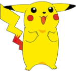
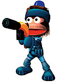

De: La Frikipedia, la enciclopedia extremadamente seria.
De: La Frikipedia, la enciclopedia extremadamente seria. De: La Frikipedia, la enciclopedia extremadamente seria.

|
ATENCIÓN Este artículo es simple y llanamente malo. El autor tiene un humor de díficil comprensión para los frikipedistas en general o es que realmente no tiene ni puta gracia. Si crees que puedes mejorarlo inténtalo. |
| De la serie conflictos armados: | ||||
| La guerra de Noentiendo | ||||
| ||||
| Lugar y fecha | El reino champiñón a las cinco y media aproximadamente (a todos les venía bien a esa hora) | |||
|---|---|---|---|---|
| Bandos | El poder de Mario | Donkey konga corp. | ||
| Fuerzas | Un kilo setas alucinogenas | Unos | ||
| Comandantes | Super Mario | Donkey Kong | ||
| Armas | De todo | De todo también | ||
| Bajas | El flojo de yoshi | Pocas | ||
| Resultado | Que Microsoft ganase a Noentiendo por falta de personajes | |||
Esto empezó cuando Mario y el gorila subnormal alias donkey kong se hartaron de irse de karts, al tenis de putas y empezaron a pegarse de hostias pero eran solo dos, entonces llamaron a sus amigotes para ayudarles y esto son los siguientes:
| Lo cualo | ¿lo cuál hace? |
|---|---|
| Mario: El cabecilla del poder de mario (Si no para que el nombre) es Capitán general sargento teniente al mando, se dice que tiene tendencias masoquistas y le pide a yoshi que le pegue con el látigo. | |
| Yoshi: La mascota sexual de Mario, era su sargento teniente al mando hasta que donkey kong le metió una seta alucinógena por el culo. | |
| Peach: La pedorra de la querida de Mario, lucha con un paraguas con tendencias gays. | |
| Kirby: Una cosa rosa glotona y gay que se comería a sí mismo si no fuera porque ya lo ha hecho. | |
| El ser que ve Mario cuando toma setas alucinógenas, cuando le tocas el pito explota pero si no también. | |
| Wario: Por una vez se alió con Mario pero porque éste le había prometido ajos y cosas guarras. | |
|  | Pikachu: El pokémon que dice pika pika y no se rasca. |
| Lo cualo | ¿lo cuál hace? |
|---|---|
| Donkey Kong: El cabecilla de donkey kong corp. Fue detenido en 2005 por guardar cocaína en unos bongos, se dice que también tomaba esteroides. | |
| Meta Knight: En realidad es el primo de kirby, solo que le gusta el travestismo y llevar espadas chulas. | |
|  | Ape: El espía intergaláctico de donkey kong, en realidad no es un personaje de Noentiendo, pero con un poco de dinero y plátanos se puede contratar hasta a Bill Gates para que trabaje en Noentiendo. |
 |
Da Morsi: Un vagabundo adicto al actimel caducado, personaje de animal crossing y el que le pasa a donkey kong las pastis para ponerse a tono. |
| Link: Un freaky trasnochao que se cree un guerrero, se quiere cepillar a zelda. | |
| Pikmin: Aliens con flores en la cabeza que usan el ataque alergia. | |
| Tom Nook: El proveedor de armas de la corporación. |
Estas son las armas que se usaron:
Ganó el Donkey konga corp. por mayoría pero la C.I.A los mató para que pareciese más dramático. Después de la matanza shigeru se suicidó pajeandose hasta la muerte.
Todos vivieron en paz drogándose con setas alucinógenas hasta que guerra definitiva por el universo (crea el artículo que te estoy dando una idea).
Autor(es):